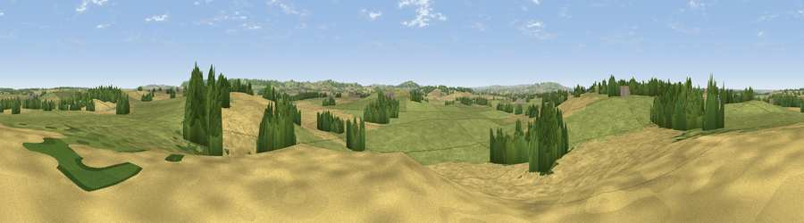

Viewpoint near Pillerton Priors
#28272 in England · top 58% of its area beats it · near Pillerton PriorsWhere it is
The exact computed spot (SP 30075 47425). Click the marker for map links.
The view, rendered

A 360° render of this exact spot computed from the terrain model, tree cover and land cover — summer colours, afternoon light, calibrated against photographs of famous viewpoints. Real trees, hedges and buildings will differ in detail.
The panorama
Grey silhouette: terrain skyline in each direction (720 bearings, Earth curvature and refraction included). Dashed green: skyline with trees (+15 m) and buildings (+8 m) as obstacles. Blue strip: how far the ground is visible on each bearing.
Where the view opens
Wedge length = distance to the farthest visible ground on that bearing (vegetation-aware). Rings at 10, 25 and 50 km.
What fills the view
53% grassland · 38% cropland · 9% woodland
Angular shares of the visible panorama (visual magnitude), not map area. Landscape diversity 0.41 (0–1 Shannon).
Key numbers
More beautiful places nearby
The staircase of upgrades: each row has a higher view potential than everything closer. Driving times are estimates from straight-line distance, calibrated against real road routing — check an actual route before setting out.
| Place | Direction | Drive | Score |
|---|---|---|---|
| Viewpoint near Pillerton Priors | W · 2 km | ~6 min | 52.5 |
| Viewpoint near Upper Tysoe | SSE · 6 km | ~12 min | 62.6 |
| Sunrising Hill | ESE · 6 km | ~13 min | 66.8 |
| Viewpoint near Radway | ESE · 6 km | ~13 min | 70.5 |
| Viewpoint near Radway | E · 8 km | ~16 min | 71.7 |
| Viewpoint near Ilmington | WSW · 11 km | ~20 min | 72.6 |
| Viewpoint near Meon Vale | W · 13 km | ~23 min | 77.0 |
| Broadway Hill | WSW · 22 km | ~36 min | 77.7 |
52.12432, -1.56212 · source: screening · position refined by local search. Computed location — check access rights before visiting.